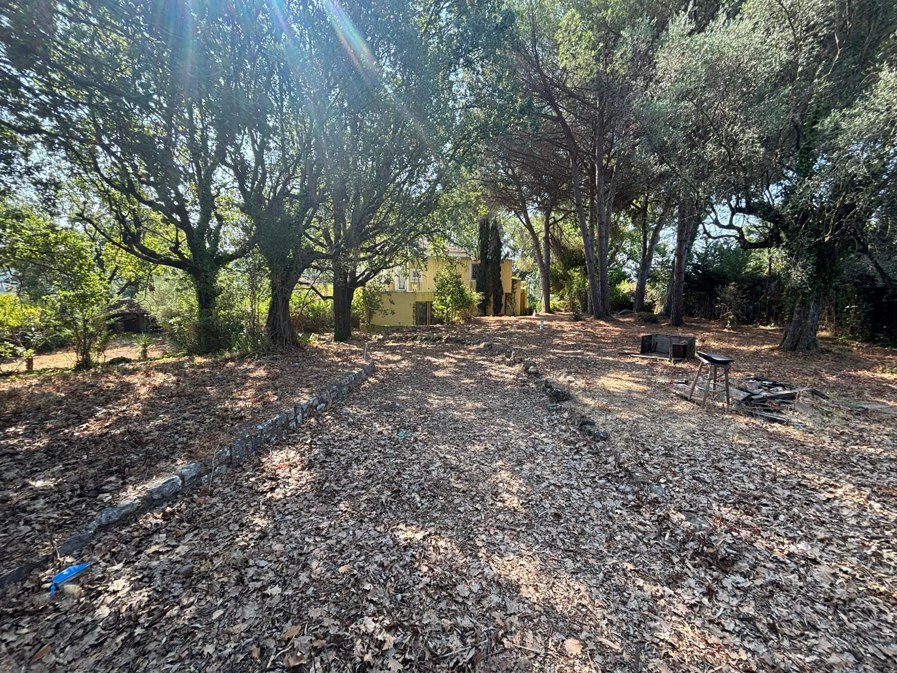

Les espaces du quotidien
Entrée, séjour, cuisine, salon, bureau et une chambre au rez-de-chaussée. Trois chambres et une salle de bains à l’étage.
À VENDRE · MOUGINS, CÔTE D’AZUR
Une villa à réinventer, dans un grand jardin arboré
au cœur du Domaine des Peyroues.
LA PROPRIÉTÉ / 01
À Mougins, une propriété à transformer selon votre vision.
Au 222 avenue Verdi, dans le Domaine des Peyroues, cette villa existante d’environ 350 m² prend place sur un terrain de 6 426 m². Arbres, volumes et espaces annexes constituent la base d’un projet de rénovation d’ensemble.
La propriété comprend une piscine à réhabiliter, un appartement indépendant et des studios décrits au titre de propriété. Elle s’adresse à un acquéreur qui souhaite créer une résidence familiale ou étudier une opération de valorisation.
Consulter la brochure investisseur ↗*Selon la description du titre : quatre chambres principales, auxquelles s’ajoutent une chambre dans l’appartement et une dans le studio de l’étage. Description historique à rapprocher de l’état actuel ; surfaces et conformités à vérifier.

UN CADRE À S’APPROPRIER
Un jardin arboré, la maison en retrait et des espaces extérieurs à repenser.
LES VOLUMES / 02
La distribution décrite dans le titre de propriété offre une base à explorer lors de la visite.
Entrée, séjour, cuisine, salon, bureau et une chambre au rez-de-chaussée. Trois chambres et une salle de bains à l’étage.
Appartement au rez-de-chaussée, studios décrits au titre, garage, chaufferie, cave, cellier et local piscine au sous-sol.
Piscine existante à réhabiliter, pool-house avec WC et douche, jardin planté et cabanon.
La description du titre ne vaut pas reconnaissance de logements juridiquement distincts. L’état des accès, les usages et les surfaces restent à confirmer.
LA GALERIE / 03
Photos de la propriété dans son état actuel. Cliquez sur une image pour l’agrandir.
LE POTENTIEL / 04
Rénover pour habiter, ou étudier un projet de division et de seconde construction.
PISTE 01
Repenser les volumes, remettre à niveau les équipements, réhabiliter la piscine et redonner sa place au jardin. Une rénovation globale à concevoir autour du bâti existant.
Enveloppe indicative : 550–750 k€ TTC
PISTE 02
La brochure explore une division en deux lots et une villa neuve de 260 à 280 m², avec cinq chambres et piscine. La faisabilité doit être confirmée par les études et autorisations.
Enveloppe indicative : 895–1 145 k€ TTC
Division, constructibilité, accès et réseaux soumis au PLU, aux règles du domaine, aux relevés du géomètre et aux autorisations. Les budgets sont des estimations de cadrage, sans devis ni métrés définitifs. Les illustrations représentent des intentions, sans garantie d’exécution.
UN PROJET À PRÉPARER / 05
La maison nécessite une rénovation importante. Le dossier permet d’aborder l’étude du bien avec une vision concrète de son état et des vérifications à mener.
Ouvrir la brochure PDF ↗Titre de propriété, dossier de diagnostics du 21 septembre 2026, procès-verbaux d’AG de l’ASL 2024–2026, photographies et brochure investisseur. Les pièces nominatives sont communiquées sur demande.
Rénovation globale, électricité, piscine et reprise de la toiture de l’appartement accolé. Le diagnostic signale des indices de termites et des dégradations de poutres au niveau N−1, un plafond instable et un conduit de cave signalé amianté. Des expertises complémentaires sont nécessaires.
Non. Le schéma de deux lots est une hypothèse de projet : environ 3 926 m² pour la villa existante et 2 500 m² pour le lot à créer. Le géomètre, l’urbanisme et les règles du domaine doivent en confirmer la faisabilité.
DPE et contrôle d’assainissement à compléter selon le dossier disponible. Le type d’assainissement reste à confirmer. L’ERP mentionne le feu de forêt B2, l’obligation de débroussaillement et un aléa argile fort. Certaines zones n’ont pas pu être visitées.
Les informations sur les risques auxquels ce bien est exposé sont disponibles sur Géorisques.
L’ADRESSE / 06
222 avenue Verdi
06250 Mougins · Alpes-Maritimes
Référence cadastrale : BL 143 · Terrain : 6 426 m².
Voir l’adresse sur la carte ↗PARLONS DE VOTRE PROJET
Demandez le prix, le dossier complet ou un rendez-vous sur place.
Appeler le 06 80 88 91 62 ↗Envoyer un SMS →Contact pour la vente : Yiyuan Zeng